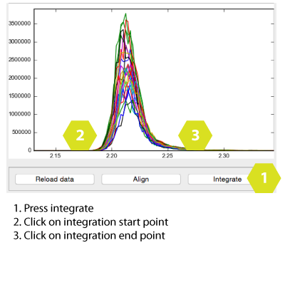
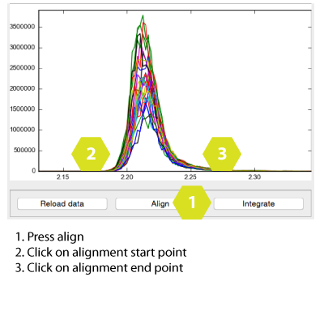

...
Before loading samples, the.raw files need to be converted to .txt files. This is done using the application MSConvert included in the ProteoWizard package, which can be downloaded here. Load samples using the File menu. Note that you can only load samples which have exactly the same transitions, meaning that it is not possible to integrate samples run with different methods simultaneously. Be careful to remove eventual files containing washes or similar.
Integrate peaks by clicking the Integrate button, and then clicking on the chromatogram twice. Place the cursor on the point where you want to begin the integration, click, and place the cursor on the point where you want the integration to end, click.
Alignment is useful for cases when there is RT drift during the run, or when integrating data collected at different times. Align chromatograms by clicking the Align button, and thereafter choosing start and end point for the alignment window. Note that the function aligns the peaks with the highest point placed in the centre, thus peaks that are double, split or jagged, will be problematic to align well.
If an alignment failed, the data can be reloaded by clicking Reload Data. It will load the non-aligned chromatograms.